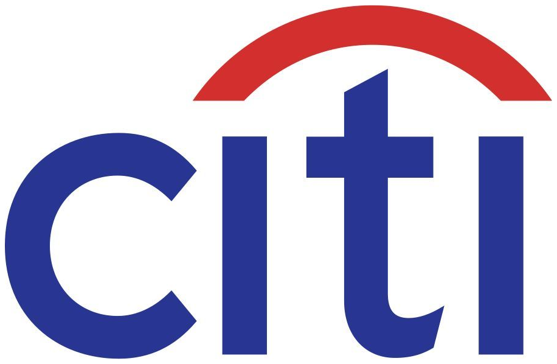

Emanuelle Sedita
MBA Candidate at Columbia Business School
Incoming Investment Banking Associate at Citi
Education
Columbia Business School
MBA, Finance, May 2027
- Honors
- Henry Kravis Scholar
- Leadership
- IB Club AVP of Finance
Seton Hall University
BBA, Finance & Economics, May 2018
- Honors
- cum laude, Beta Alpha Psi
- Leadership
- Hall Street Fund VP
Experience

Citi
Healthcare IB – Summer AssociateSummer 2026
- Supported execution of five live buy- and sell-side mandates across MedTech, Biopharma, and HC Services totaling $60B+ in expected transaction value through financial modeling, due diligence and various client presentation materials
- Drafted business and MD&A sections of a Form 10 registration statement for a ~$20B planned MedTech separation, coordinating inputs across company management, legal counsel, and senior deal team
- Independently authored a 24-page strategic alternatives pitch on Solventum recommending a tax-free spin of its HIS segment vs. a ~$7.1B sale; built DCF, LBO, comps, precedents, and SOTP models quantifying strategic decision making
Johnson & Johnson
MedTech GSI – Manager2024 – 2025
- Led cross-functional buy-side commercial diligence across wound care, focal energy oncology, robotics, and Open/MIS external innovation targets for ICs including CEO, CFO, BD, and Commercial leadership within a ~$32B portfolio
- Built bottom-up US/OUS revenue models for $1B+ acquisitions/R&D projects; delivered base/upside/downside models with tornado sensitivities to support NBIO/BO valuations, influence deal terms/structure, and overall GTM integration strategy
- Led C-suite/banker diligence calls and directed external consultants for KOL research to validate competitive conversions, surgeon specialty behavior, and product market landscapes tightening peak and competitive market-share capture in revenue models
- Triangulated IQVIA claims, competitive diligence, and KOL research to size $2B+ TAM/SAM into SOM and peak-share ramps
- Produced executive fact packs that bridged revenue assumptions, projections, and market insights for CEO/CFO/BD IC
- Aligned Regulatory, Finance, BD, and Commercial leadership on product landscape, GTM strategy, and launch timing
MedTech Surgery SCG – Sr. Financial Analyst2022 – 2024
- Developed financial analytics to support leadership’s major pricing strategy shift in the MedTech Surgery portfolio and sales/account management personnel restructuring contributing ~$50M in top-line growth for FY’25 enabling 250+ new hires
- Owned individual customer P&L’s and created GPO pricing-tier models across ~$5.6B sales; drove portfolio-level price actions and led weekly exec reviews to align leadership in strategic pricing/deals to accelerate decisions
- Optimized volume/mix/price financial strategy and supported negotiation of contracts/bundles driving ~$200M in revenue
MedTech Ortho Commercial Excellence – Sr. Financial Analyst2021 – 2022
- Managed ~$1.3B in commercial S&M budgets supporting ~$5.2B in revenue; developed in-depth knowledge of tiered and product-specific compensation plans for ~2.7K headcount through cross-functional partnership with senior leadership
- Led financial analysis for a sales force restructuring enabling ~$25M investment into hiring 100+ new sales resources
- Partnered with senior finance management on developing and presenting quarterly results to the US MedTech CFO
Corporate Functions – Financial Analyst (FLDP)2019 – 2020
- Managed $60M in talent development and recruitment budgets using revamped quarterly reporting packages and Tableau dashboards; identified and addressed budget risks and opportunities across headcount, travel, and project spend
- Demonstrated strategic financial leadership to solve $2M gap, prioritize key projects, and restructure talent teams
MedTech SC FP&A – Assoc. Financial Analyst (FLDP)2018 – 2019
- Consolidated decks, developed reporting, and provided commentary for ~$6B in worldwide P&L statements, cost improvement projects, and SC finance metrics delivered directly to the US MedTech SC CFO/VPs
- Lead analyst directing budgets for a major $300M SC initiative outsourcing product production to Jabil